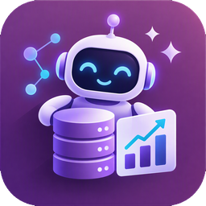
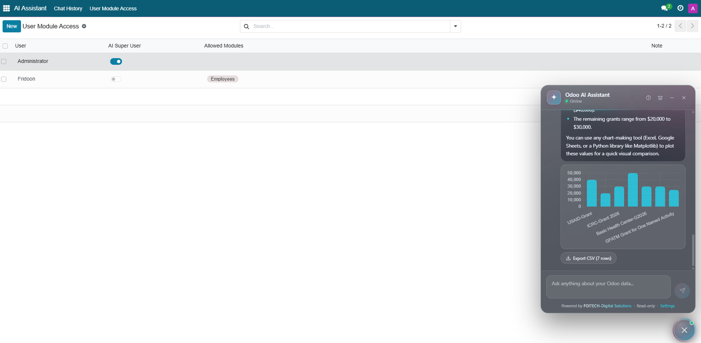
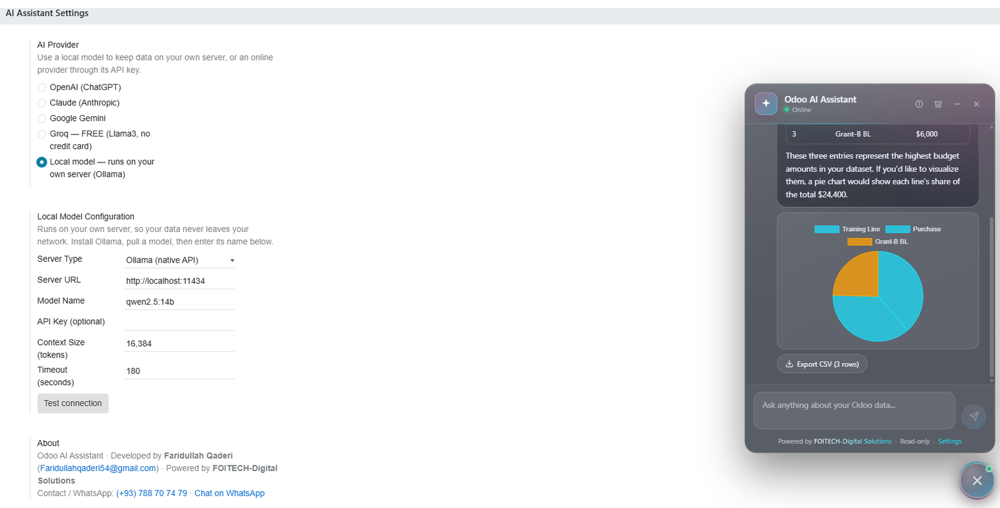
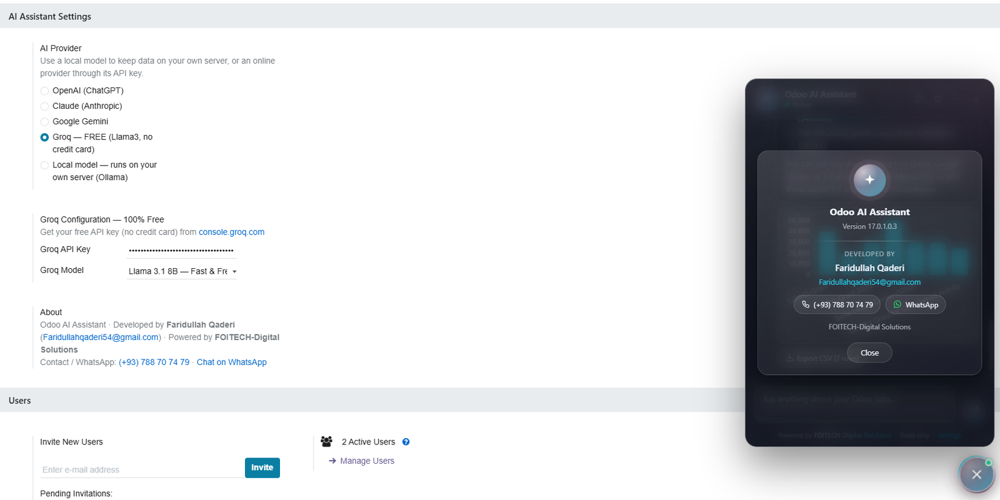

A modern assistant that lives in every screen
One round button in the corner of Odoo opens a translucent glass chat window. It adopts your Odoo theme colour and stays out of the way until you need it.


A floating AI chat inside Odoo that turns plain-language questions into safe, read-only queries, then answers with text, tables, charts and CSV export. Use cloud AI, or run an open-source model on your own machine so your data never leaves your network.
One round button in the corner of Odoo opens a translucent glass chat window. It adopts your Odoo theme colour and stays out of the way until you need it.
Built on Odoo's own ORM, so answers respect the same access rights your users already have.
Ask "How many confirmed sale orders this month?" The assistant plans the query, runs it and explains the result in plain words.
It discovers the relevant models and fields for each question, so Sales, CRM, HR, Accounting, Inventory and your custom modules all work.
Bar, line and pie charts are drawn when the result suits a visual. Chart.js is bundled, so charts work even without internet access.
Download the records behind an answer as a CSV file that opens directly in Excel or LibreOffice.
Every question and answer is saved per user in an AI Chat History list you can search, filter and review.
Decide which modules each user's questions may touch, and mark trusted users as AI super users.
OpenAI, Anthropic Claude, Google Gemini, Groq, or a local model through Ollama or any OpenAI-compatible server.
With a local model, questions, schema and results stay on your own hardware. Ideal for finance, government and regulated data.
Only the models relevant to a question are sent to the AI, which keeps prompts small and answers quick, even on small local models.
The AI never touches your database. It only writes a small JSON plan, and Odoo checks and runs that plan.
Type a question in the chat. Any language your chosen AI model understands will work.
The plan is limited to search_count, search_read and read_group, executed as you, so access rights and record rules apply.
A clear reply with lists or tables, an optional chart, and a CSV download.






Switch providers at any time from Settings. No code changes, and your history is kept.
| Option | Best for | Cost | Data leaves your server? | Needs |
|---|---|---|---|---|
| Local model (Ollama, LM Studio, vLLM) | Privacy, regulated data, offline use | Free (your hardware) | No | A capable PC or GPU server |
| Groq | Fast, low-cost start | Free tier with limits | Yes | API key |
| OpenAI | High quality general use | Pay per use | Yes | API key + credits |
| Claude | Careful reasoning, long answers | Pay per use | Yes | API key + credits |
| Gemini | Large free quota for testing | Free tier + paid | Yes | API key |
Follow the installation guide first, then configure one provider. You can add the others later.
odoo_ai_assistant folder into your Odoo addons path, or install it from the Odoo Apps store.requests library is installed (it is included with most Odoo installs): pip install requestsodoo-bin -u odoo_ai_assistant -d YOUR_DB and hard-refresh the browser (Ctrl+F5) so the new interface files load.Run the AI on your own computer or server. Nothing is sent to the internet.
curl -fsSL https://ollama.com/install.sh | shollama pull qwen2.5:14bollama list
curl http://localhost:11434/api/tagscurl.exe or Invoke-RestMethod http://localhost:11434/api/tags.| Field | Value |
|---|---|
| Server Type | Ollama (native API) |
| Server URL | http://localhost:11434 (or http://SERVER-IP:11434 if Ollama runs on another machine) |
| Model Name | Exactly as shown by ollama list, for example qwen2.5:14b |
| API Key | Leave empty (only needed behind a reverse proxy that requires one) |
| Context Size | 16384 (use 8192 if memory is tight) |
| Timeout | 180 seconds (use 300 or more on CPU-only machines) |
OLLAMA_HOST=0.0.0.0:11434 and restart Ollama.Choose Server Type OpenAI-compatible and enter the server's address including /v1, for example http://localhost:1234/v1 (LM Studio) or http://SERVER:8000/v1 (vLLM). In this mode the context size is set on the server itself.
| You see | Try |
|---|---|
| "Could not reach the AI server" | Is Ollama running? Check the URL and firewall. Test with the curl command above from the Odoo server itself. |
| "Model not found" | The name must match ollama list exactly (including the tag after the colon). Run ollama pull for it. |
| Very slow answers | Use a GPU, a smaller model, or a lower context size. The first request is slower because the model loads into memory. |
| "Took too long to answer" | Increase the Timeout. If Odoo runs with workers, also raise limit_time_real in odoo.conf. |
| Wrong or empty answers | Small models struggle with structured output. Try a 14B+ model, and avoid "thinking" model variants for speed. |
gsk_). You will only see it once.sk-).gpt-5-mini. Any chat model id from OpenAI's models page works.sk-ant-).claude-sonnet-5-5.AIza).gemini-flash-latest.Open AI Assistant → User Module Access and click New. Choose the user, pick the Allowed Modules, or switch on AI Super User. The assistant applies these rules in order:
| User | What the assistant can query |
|---|---|
| Odoo administrator | Everything |
| AI Super User | Everything |
| No rule defined | Everything the user can already access (open by default) |
| Rule with modules | Only those modules |
| Rule with no modules | Nothing (fully blocked) |
Only search_count, search_read and read_group are allowed. The assistant cannot create, edit or delete records, and plans are parsed as data, never executed as code.
Queries use the user's own access rights and record rules, so nobody sees data they could not already open in Odoo.
With a cloud provider, the AI receives the question, the names and labels of the few relevant models and fields, and up to 50 result rows used to write the answer. With a local model, none of it leaves your network.
API keys are stored in Odoo system parameters, visible to administrators only, and Gemini keys are sent in a header rather than in the URL. Answers are HTML-escaped before display.
| Item | Details |
|---|---|
| Odoo version | 17.0, built on standard Odoo and OWL APIs |
| Odoo dependencies | base, web, mail |
| Python library | requests |
| Internet | Only for cloud providers. Local models and charts work offline. |
| License | LGPL-3 |
No. It is limited to read-only queries, and every query runs with the asking user's own permissions.
No. Only the models relevant to the question are described to the AI, plus the few result rows needed to phrase the answer. With a local model nothing leaves your server.
The assistant follows the language abilities of the model you choose. Large cloud models handle many languages well. Small local models are usually strongest in English, so test with your own language before rolling out.
This module is free under LGPL-3. Groq and Gemini offer free tiers with limits. OpenAI and Claude bill per use. A local model costs only your own hardware.
A GPU makes local models fast. CPU-only machines work but answers can take a minute or more. See the Ollama guide above for memory estimates.
| Version | Changes |
|---|---|
| 17.0.1.0.4 | Chart.js bundled (charts work offline). Model names for OpenAI, Claude and Gemini are now editable. Support for current OpenAI reasoning models. Gemini API key moved from the URL to a header. Built-in setup guides. |
| 17.0.1.0.3 | Local model support (Ollama and OpenAI-compatible servers) with Test connection. |
| 17.0.1.0.2 | New translucent glass interface, About panel, answer formatting with lists and tables. |
| 17.0.1.0.0 | First release: natural-language queries, charts, CSV export, history and per-user module access. |
Developed by Faridullah Qaderi, FOITECH-Digital Solutions. Questions, bug reports, training and custom integrations are welcome.
Powered by FOITECH-Digital Solutions · Innovative Solutions for a Smarter Tomorrow